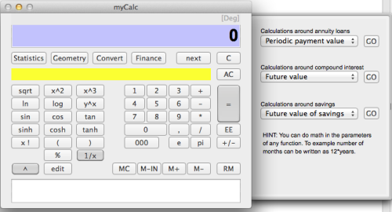

Thank you for downloading FormulaCalculator.
This calculator is somewhat different from traditional calculators as it is more a kind of “formula builder” calculator. The equations you type is stored in a text, that is parsed and evaluated to obtain the result you want. This means that the text can be edited to correct mistakes or make adjustments to the formula to obtain a new result. The text can of course also be copied into a document you are working on.
The bottom text field displays the formual as you type. The right drawer opens when you hit the "Statistics, Geometry, Convert or Finance" buttons. Each button with a different drawer. The drawers extends the basic functionality of the calculator.
